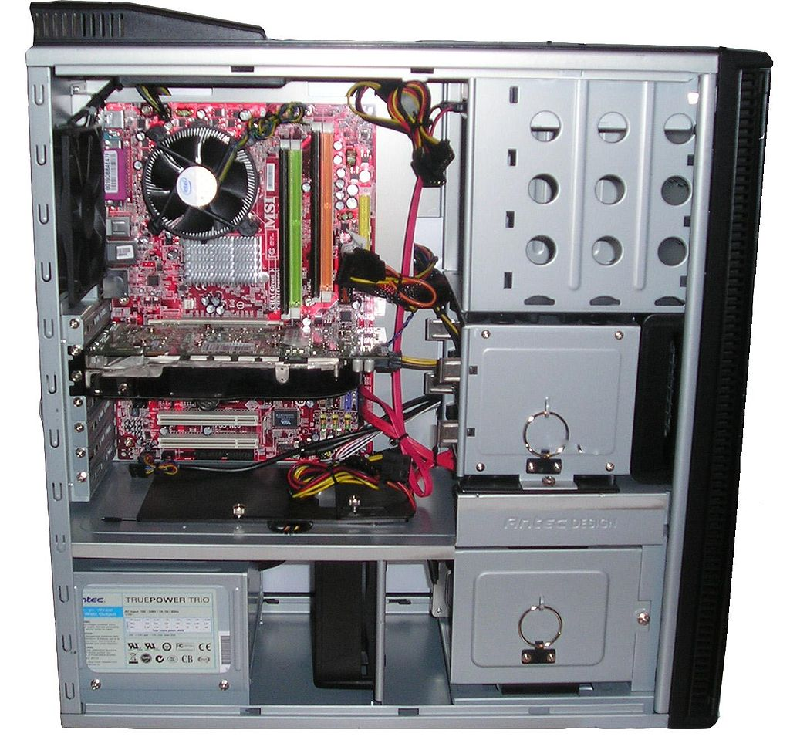

Keskusyksikkö on tietokoneen laitteiston keskeinen osa, joka sisältää keskussuorittimen.[1] Tietokoneessa voi olla useita suorittimia moniprosessoinnissa. Supertietokoneet voivat koostua useista laitekaapeista, jolloin laitteistossa ei ole vain yhtä keskusyksikköä.
